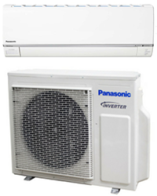

-
CU-4XS34UBZ
 -
F-VXK70A

-
EH-NA98/EH-NA98-K605

-
F-GPT01A

nanoe™ Technology:Panasonic’s nanoe™ Technology is a revolutionary air purification system consist of nanoe™, nanoe™ X, and nanoe-G. It deodorises, inhibits the growth of bacteria, and viruses, and is effective in dust removal for a fresher, cleaner indoor environment, keeping your living space fresh and clean for you and your family. nanoe™ X are fine (5 to 20nm) and weak acidic capsules of water containing an abundance of OH radicals that are released en masse into the air. OH radicals draw hydrogen atoms from viruses, bacteria, odours and allergens that are in the air, thus inhibiting them. The more OH radicals there are, the more effectively bacteria and viruses can be inhibited. A nanoe™ X device releases OH radicals at a rate of 4.8 trillion per second.
ECONAVI With Intelligent Eco Sensors:ECONAVI has two sensors: the Human Activity Sensor and the Sunlight Sensor. Together, they monitor human location, movement, absence, and sunlight intensity to use energy more efficiently. Rhythmic temperature-controlled pattern to save energy without sacrificing comfort. High-precision sensor technology allows efficient, automatic operation to match the room conditions. This keeps everyone comfortable while saving energy.
Inverter Technology:An Inverter is a control circuit that varies electrical frequency. In an air-conditioner, the Inverter regulates the electric power linearly in accordance with room conditions in order to achieve comfortable and energy-saving operations. Panasonic’s Inverter reduces power consumption by varying the speed of the compressor according to the temperature changes with the aim of minimising the temperature fluctuations so you can enjoy consistent cooling comfort.Panasonic’s Inverters come with PAM (Pulse Amplitude Modulation) and PWM (Pulse Width Modulated Wave) which provide faster cooling at start-up and better control on the speed of the compressor’s rotation, compared to conventional Inverters.